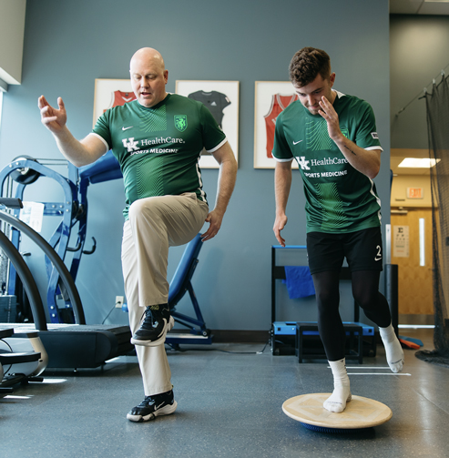
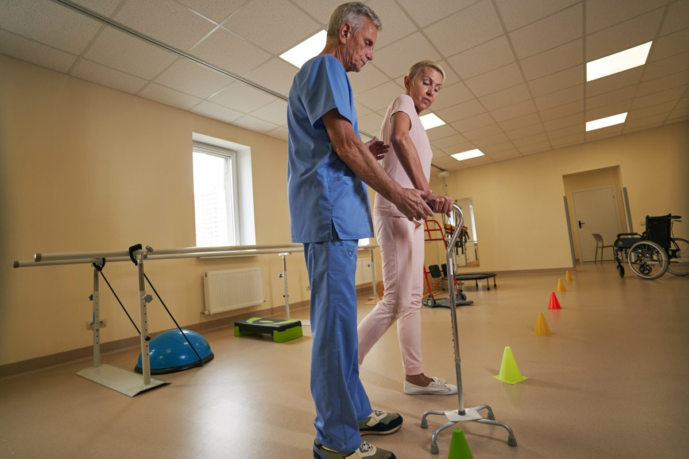

Musculoskeletal Injuries

We assess and treat muscle, joint, ligament and tendon injuries. Using manual therapy, corrective exercise and education, we help restore mobility, reduce pain and improve performance.
Advanced Sports Rehabilitation
For athletes and active individuals, our advanced rehab program integrates strength, flexibility, and functional movement retraining tailored to your sport and goals.
Acupuncture

We offer evidence-informed acupuncture for pain relief, muscle tension, and inflammation management, safely applied by licensed physiotherapists.
Manual Therapy

Joint and soft tissue mobilizations improve range of motion, reduce stiffness and promote recovery. Techniques include Maitland, Mulligan and myofascial release methods.
Vestibular Rehabilitation

Treatment for dizziness, vertigo and balance disorders including BPPV, motion sensitivity, and post-concussion vestibular dysfunction.
Shockwave Therapy

Shockwave therapy accelerates healing for chronic tendon pain, plantar fasciitis, and calcific shoulder tendinopathy. Fast, effective, and non-invasive.
Custom Base Orthotics

Custom-made orthotics support proper foot alignment and reduce stress on knees, hips and spine — ideal for work, daily walking or athletic performance.
Concussion Management

Evidence-based concussion care includes vestibular rehab, vision retraining, and graded return-to-activity programs to restore full function safely.
Neurological Rehabilitation
We help clients with stroke, multiple sclerosis, and Parkinson’s disease improve mobility, coordination, and independence through functional training.
Workplace NL

We provide Workplace NL-approved physiotherapy for work-related injuries. Return-to-work programs and communication with case managers are included.
MVA (Motor Vehicle Accidents)

We offer rehabilitation programs for whiplash, soft tissue injuries, and pain management following car accidents, ensuring safe return to normal activities.